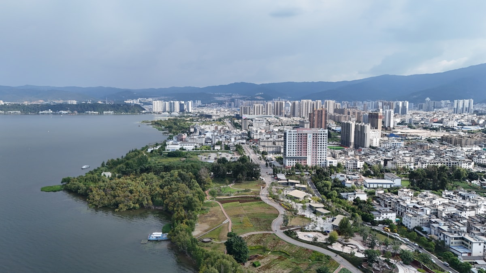
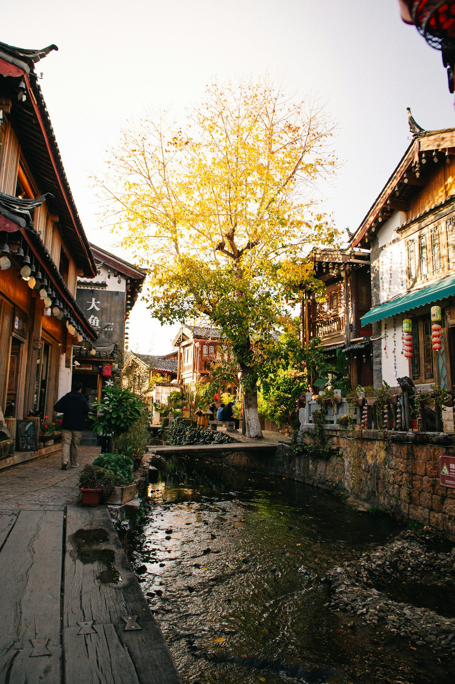
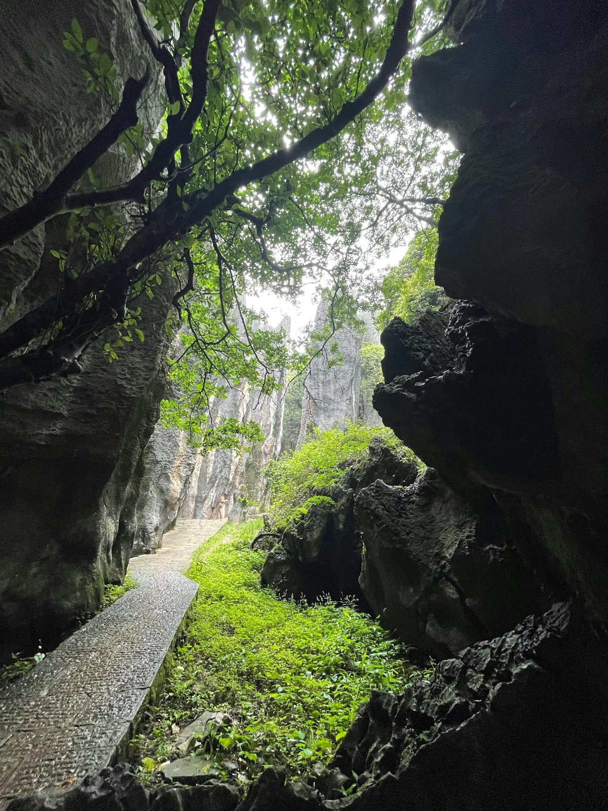
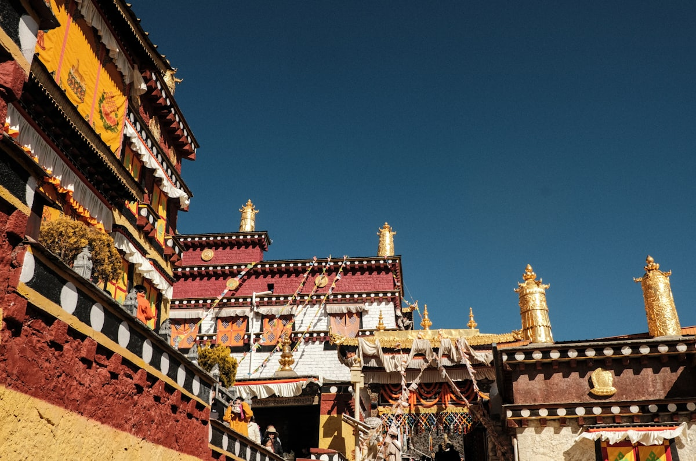
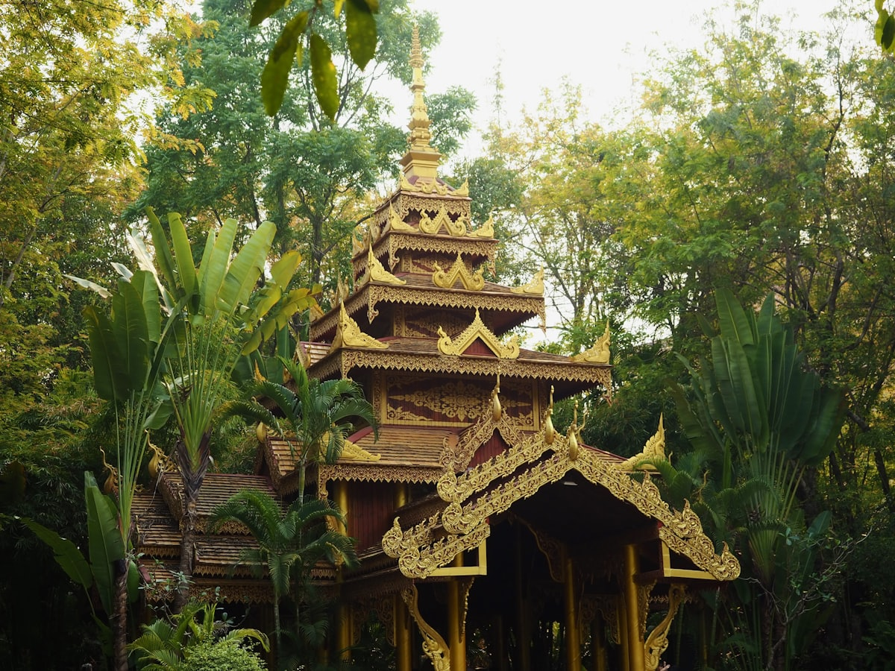
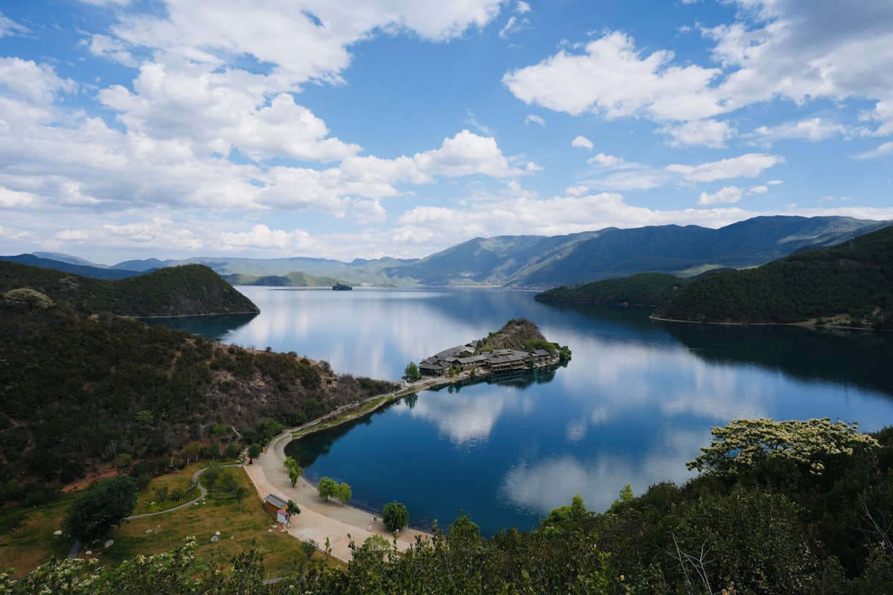
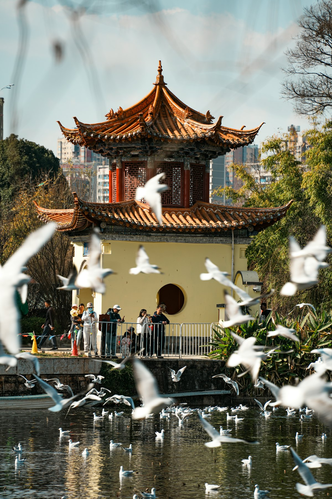

| 事项 | 结论 |
|---|---|
| 事项 | 结论 |
| 推荐方案 | 10 天 9 晚（昆明 2 晚 + 大理 2 晚 + 丽江 2 晚 + 香格里拉 2 晚 + 昆明 1 晚） |
| 返程约束 | 第 10 天从昆明返程 |
| 行程链 | 昆明 → 石林 → 大理 → 丽江 → 玉龙雪山 → 香格里拉 |
| 预算（人均） | 经济 3500–4500 ／ 标准 5800–7500 ／ 舒适 9000–12000 |
| 三件提前事 | ① 玉龙雪山大索道提前 1–3 天抢票 ② 香格里拉备高反药 ③ 古城客栈旺季提前 2 周订 |
| 季节提醒 | 大理丽江 3–5 月、9–11 月最佳；雪山全年可去，冬季雪最多 |
| 交通卡 | 昆明地铁扫码；跨城高铁+大巴组合 |
以下为 10 天 9 晚的推荐节奏。海拔从昆明（1890m）→大理（2000m）→丽江（2400m）→香格里拉（3300m）循序渐进。
| 日期 | 行程 | 过夜地 | 主题 |
|---|---|---|---|
| D1 抵昆明 | 翠湖公园 + 滇池海埂看日落，宿昆明 | 昆明 | 抵达 + 春城 |
| D2 | 石林一日（高铁石林西）→ 返回昆明 | 昆明 | 天下奇观 |
| D3 | 昆明→大理（高铁 2h），大理古城 + 洱海 | 大理 | 风花雪月 |
| D4 | 洱海环游：喜洲 → 双廊 → 崇圣寺三塔 | 大理 | 环海一日 |
| D5 | 大理→丽江（动车 1.5h），丽江古城 + 木府 | 丽江 | 丽江古城 |
| D6 | 玉龙雪山：冰川公园大索道 + 蓝月谷 | 丽江 | 雪域圣山 |
| D7 | 丽江→香格里拉（大巴 3h），虎跳峡 + 松赞林寺 | 香格里拉 | 高原首站 |
| D8 | 普达措国家公园 → 独克宗古城夜景 | 香格里拉 | 高原秘境 |
| D9 | 香格里拉✈昆明（约 1h），昆明老街 + 花市 | 昆明 | 高原收尾 |
| D10 返程 | 上午昆明市区闲逛，下午返程 | — | 收尾 |
以下为 10 天全程的逐小时执行时间线，可当作「当天打开照着走」的清单。标注 ※ 的可选项视体力与天气取舍。
| 时间 | 事项 |
|---|---|
| 14:00–17:00 | 抵达昆明（长水机场/昆明南站），地铁进城入住 |
| 17:30–18:30 | 办理入住（推荐翠湖/南屏街，近地铁） |
| 19:00–20:30 | 翠湖公园（免费）：冬季看红嘴鸥，昆明「城市会客厅」 |
| 20:30 | 南屏街夜市：过桥米线、烧饵块 |
| 时间 | 事项 |
|---|---|
| 08:00 | 昆明南→石林西（高铁约 25 分钟），转景区巴士（约 20 分钟） |
| 09:30–15:00 | 石林风景名胜区（参考价 130 元）：大小石林、剑峰池、阿诗玛石，喀斯特教科书 |
| 12:00 | 景区内或县城午餐（宜良烤鸭/石林乳饼） |
| 15:30 | 返程回昆明 |
| 18:00 | 晚餐：汽锅鸡、菌子火锅（雨季限定） |
| 时间 | 事项 |
|---|---|
| 08:00 | 昆明→大理（高铁约 2 小时），入住大理古城 |
| 12:00–14:00 | 大理古城午餐 + 人民路、洋人街闲逛 |
| 14:30–17:30 | 洱海：才村码头骑行/海西绿道，看苍山洱海 |
| 18:00–20:00 | 古城夜景：五华楼看古城灯火 |
| 时间 | 事项 |
|---|---|
| 08:30–11:00 | 喜洲古镇（免费）：白族民居、稻田，喜洲粑粑 |
| 11:30–14:00 | 沿环海路到双廊古镇（免费）：南诏风情岛、玉几岛，海景咖啡馆 |
| 14:30–16:30 | 崇圣寺三塔（参考价 75 元）：大理地标，倒影池机位 |
| 17:30 | 回古城，晚餐：白族酸辣鱼、烤乳扇 |
| 时间 | 事项 |
|---|---|
| 09:00 | 大理→丽江（动车约 1.5 小时），入住丽江古城 |
| 12:30–15:00 | 木府（参考价 40 元）：「北有故宫，南有木府」 |
| 15:30–18:00 | 狮子山万古楼（参考价 35 元）：俯瞰古城全貌 + 玉龙雪山 |
| 19:00 | 古城四方街、大研花巷夜景，酒吧/民谣 |
| 时间 | 事项 |
|---|---|
| 07:00 | 出发（古城区→雪山约 40 分钟） |
| 08:30–12:00 | 玉龙雪山（进山 100 元 + 大索道 120 元）：冰川公园 4506 米观景台 |
| 12:30–14:30 | 蓝月谷：白水河「小九寨」碧水 |
| 15:00 | 《印象丽江》演出（参考价 260 元，可选） |
| 18:00 | 回古城，晚餐：腊排骨火锅 |
| 时间 | 事项 |
|---|---|
| 08:30 | 丽江→香格里拉（大巴约 3 小时，虎跳峡方向） |
| 11:30–13:30 | 虎跳峡（参考价 45 元）：金沙江峡谷，雄奇 |
| 15:00–17:30 | 松赞林寺（参考价 90 元）：「小布达拉宫」，云南最大藏传佛教寺院 |
| 18:00 | 独克宗古城（免费）：月光古城、大转经筒，藏族晚宴 |
| 时间 | 事项 |
|---|---|
| 08:30–13:00 | 普达措国家公园（参考价 138 元）：属都湖、弥里塘，高原牧场湖泊 |
| 13:30 | 午餐后返回香格里拉市区 |
| 15:00–17:00 | 藏文化体验：唐卡画院/藏药浴（可选） |
| 19:00 | 独克宗夜景 + 藏餐 |
| 时间 | 事项 |
|---|---|
| 09:00 | 香格里拉✈昆明（约 1 小时，班次较少提前订） |
| 12:00–14:00 | 昆明老街 + 景星花鸟市场 |
| 14:30–17:00 | 斗南花市（亚洲最大鲜切花市场）或云南省博物馆（二选一） |
| 19:00 | 晚餐：汽锅鸡、米线收官 |
| 时间 | 事项 |
|---|---|
| 08:30–11:30 | 自由活动：买云南鲜花饼、普洱茶、宣威火腿 |
| 11:30–12:30 | 午餐 |
| 13:00–16:00 | 退房，赴机场/高铁站返程 |
| 16:30 | 抵达出发地，结束云南 10 天行程；鲜花饼易碎建议随身携带 |
必去（必去）/ 顺路（顺路）/ 可跳过（可跳过）。

必去
必去
必去
顺路
顺路
顺路
可跳过图片为 Unsplash 主题图（玉龙雪山、洱海、丽江等为云南实景），用于页面配图。更多免费景点：翠湖公园、斗南花市、独克宗古城、束河古镇。
点击左侧节点可在地图上定位；点击地图 marker 会高亮对应节点。坐标为 WGS-84 转 GCJ-02 纠偏后标注。
以下为单人、不含购物的估算；门票为参考价，以现场为准。玉龙雪山进山费+大索道约 220 元。交通含各地进出昆明机票与省内段。
| 项目 | 经济（3500–4500） | 标准（5800–7500） | 舒适（9000–12000） |
|---|---|---|---|
| 往返交通 | 高铁约 900–1400 | 飞机约 1200–2000 | 飞机+接送约 2500–3500 |
| 省内段 | 高铁/大巴 500–800 | 含机票约 900–1400 | 包车约 1800–2800 |
| 住宿（9 晚） | 青旅/客栈 800–1200 | 民宿 1800–2600 | 海景/雪景房 4500–6000 |
| 门票 | 基础景点约 500 | 含雪山大索道约 750 | 全含+演出约 1100 |
| 餐饮（10 天） | 650–850 | 1300–1700 | 2200–3000 |
冬季（11–2 月）想避寒可把后半程换成：昆明✈版纳，告庄星光夜市 + 中科院植物园 + 野象谷，体感 25℃+，与高原线二选一。
丽江多留 2 天，往返 4h 车程进泸沽湖，看日出、环湖、走婚桥，适合想深度体验摩梭文化的人。
| 方式 | 时长 | 参考价 | 备注 |
|---|---|---|---|
| 飞机（推荐） | 视出发地 1–4h | 400–2500 元 | 昆明长水为枢纽，版纳/丽江/香格里拉有支线 |
| 高铁 | 视出发地 4–12h | 200–1200 元 | 昆明—大理 2h、昆明—丽江 3h、大理—丽江 1.5h |
| 自驾 | 视出发地 | 高速+油费 | 昆大丽高速成熟，香格里拉段山路 |
| 区域 | 价格/晚 | 优点 | 短板 |
|---|---|---|---|
| 昆明（翠湖/南屏） | 快捷 250–450 | 城市核心，地铁方便 | 中转性质，住 2 晚即可 |
| 大理古城/才村 | 客栈 300–700 | 海西田园 + 古城氛围 | 旺季一房难求 |
| 丽江古城/束河 | 客栈 300–800 | 古城情调，狮子山视野 | 古城内搬行李累 |
| 香格里拉独克宗 | 客栈 250–500 | 近古城与松赞林寺 | 海拔高，初到先休息 |